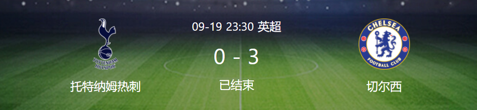

At 23:30 on September 19 (Beijing time), the fifth round of the Premier League ushered in a focus war. Tottenham Hotspur played Chelsea at home. In the first half, Christensen shot angrily to create danger, and Sun Xingqian half stabbed and shot at the door, which was resolved by Capa. In the second half, Tiago Silva snatched a header to break the deadlock. Later, Kanter suddenly hit Dell's foot with a cold arrow and refracted it into the net. Werner's assist in Ludige's strafe in the extra time stage made it even better. Finally, Tottenham lost 0-3 at home to Chelsea and suffered two consecutive league defeats.
Key events
In the 48th minute, Marcos Alonso opened the left corner, Tiago Silva beat Ali's gavel and Chelsea broke the deadlock and took a 1-0 lead!
In the 56th minute, Kovacic sent a cross after snatching Loselso in the front court. Kanter took the ball and shot angrily. The ball hit Dell's foot and refracted into the net. Chelsea was 2-0 ahead!
In the 90+1 minutes, Werner cut into the restricted area on the right and sent an inverted triangle return pass. Lvdigg swept the ball into the goal. Chelsea took a 3-0 lead!
Tottenham Hotspur start: 1 - Lori, 12 - Emerson Apparecito, 15 - Dale, 4 - Christian Romero (82'6 - Davidson Sanchez), 3 - Regillon, 5 - Heber, 18 - Loselso (61'11 - Brian Hill), 28 - Ndon Belle (61'29 - Skip), 20 - Ali, 7 - Sun Xingqian, 10 - Harry Kane
Substitute without appearance: 22 Golini, 2 Doherty, 14 Joe Lawton, 33 Ben Davis, 8 Winkes, 44 Scarlett
Chelsea start:1-Kepa, 6-Tiago Silva, 2-Ludige, 4-Christensen, 28 Aspiriquita, 3-Marcos Alonso, 5-Razhnio, 8-Kovacci, 19 Mount (46'7 - Kant), 29 Haffetz (69'11 - Werner), 9 Lukaku
Substitute without appearance: 13 Betty Nelli, 21 Chilwell, 24 Rhys James, 14 Trevor Chaloba, 17 Saur, 20 Hudson Odoi, 22 Ziyeh